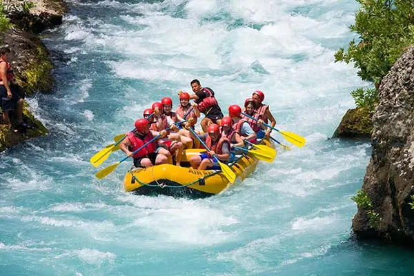

The Best Stories are Found Downstream.

The Best Stories are Found Downstream.
Our company was born from a simple truth discovered by our founders on the wild currents of the White Water River. They spent their youth exploring every bend and rapid, but they realized the true magic wasn't just in the adrenaline of the paddle; it was in the laughter, the wide-eyed moments of awe, and the triumphant tales they shared with friends around a crackling fire afterwards. They understood that the river was a storyteller, and they wanted to help others listen.
Armed with a single, well-loved raft and that core belief, they began sharing their passion. From those humble beginnings, our philosophy has remained unchanged, guided by our motto: "The Best Stories are Found Downstream." We've grown, but our mission is still to be more than just guides; we are the curators of your next great adventure story, ensuring every trip down our magnificent rivers writes a new, unforgettable chapter in your life.